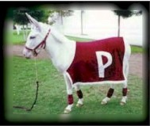

Visión
Ser una entidad con reconocido prestigio en el ámbito de la administración y gestión escolares, que proporcione servicios con calidad humana, eficaces, innovadores, en un ambiente de respeto, honestidad y confianza.
Misión
La Dirección de Administración Escolar es un órgano administrativo que brinda servicios con eficacia, eficiencia y funcionalidad en la gestión escolar a la comunidad politécnica en los niveles medio superior y superior de las distintas modalidades educativas, desde el ingreso, trayectoria hasta su egreso, con trabajo en equipo, actitud coordinada y enfoque proactivo en la solución de problemas, con equidad, transparencia y en apego a los valores humanos e institucionales.
Escudo
Fueron las inquietudes estudiantiles quienes tomaron la iniciativa para crear los símbolos que identificaran a la naciente institución politécnica. En los años 1944-1945 la Federación Nacional de Estudiantes Técnicos (FNET) lanzó una convocatoria para diseñar un escudo representativo de las escuelas que integraban el IPN. El primer lugar fue otorgado al alumno Armando López Fonseca quien con ayuda de su compañero Jorge Grajales, lograron que su diseño fuera el ganador. El escudo fue modificado en 1948 conservando sus elementos originales.
Lema:"La técnica al servicio de la patria
El lema era utilizado por algunos estudiantes desde antes de la creación del IPN, pero fue durante el Primer Congreso Nacional de Estudiantes Técnicos, realizado en la ciudad de Chihuahua en 1937, donde el estudiante Jesús Robles propuso utilizar la frase La Técnica al Servicio de una Patria Mejor. Años más tarde este lema fue modificado por “La Técnica al Servicio de la Patria”, el cual expresa los ideales del Politécnico.

Himno
Para obtener el Himno se convocó a un concurso abierto para su creación, pero no hubo eco al llamado. Luego de dos nuevas convocatorias, la poetisa Carmen de la Fuente resultó triunfadora del certamen y la Dirección General del Instituto le premió, el 15 de julio de 1961. Posteriormente, como la música aún no estaba elegida, se convocó a un certamen para poner música a la letra del himno del IPN, y resultó triunfador Armando González Domínguez, pianista reconocido y director de varias orquestas.
Mascota
Es tradición que las Instituciones de Educación Superior, y particularmente los equipos deportivos, elijan una mascota; la del Instituto Politécnico Nacional es un burro blanco. Se conocen por tradición oral diferentes versiones que al paso del tiempo se funden entre la realidad y el mito, el caso del Instituto Politécnico Nacional es de las más conocidas, la razón es muy particular. Se dice que al establecer los límites del terreno donde se construía el Instituto, en la Ex Hacienda de Santo Tomás durante los años 30, quedó encerrada una burra blanca; al ser descubierta por los estudiantes e integrantes del primer equipo de fútbol americano la tomaron como su mascota. Con el paso de los años, la burra se convirtió en uno de los símbolos del Politécnico, fundamentalmente en el ámbito deportivo